解析几何
按知识依赖重组 · 配有概念、推导与讲解型例题
版本：2026-11-19-daily-02 · 扩充修订阅读版
历史图片未重读的细节不作为已核实原题
本册目录
向量方法、平面与空间直线及二次曲线
导读
解析几何的基本思想，是把位置、方向、垂直、相交这些几何关系写成代数方程，再用代数运算来回答几何问题。方程并不是图形的替代品，而是对图形所受约束的精确表达。例如，要确定一条直线，既要知道它朝哪个方向延伸，也要知道它经过哪个位置；要求两个图形之间的距离，就要在无数条连接线段中找出最短的一条。
本册以向量运算为主线，因为几类基本几何问题恰好各有一种向量工具来处理：点积处理投影、长度和夹角；叉积处理垂直方向和面积；混合积处理体积和共面；线性方程组处理多个约束的公共部分（交点、交线）。
本册的顺序是：先建立直角坐标系中的向量与投影，再推导直线和平面的方程，接着讨论它们之间的位置关系、夹角和距离，然后用二次曲线和二次曲面说明坐标变换怎样简化几何问题，最后总结几何解题中常见的完整性问题。前七章覆盖已有课程会话的主要内容；二次曲线和二次曲面是为补足解析几何的基本体系而写的衔接内容，不代表曾经上传过的课程页面。
第一章 向量及其坐标表示
1.1 点、位置向量与位移
点表示一个位置，向量表示一个既有大小又有方向的量，例如位移、速度和力。选定坐标原点 之后，每个点 都可以用从原点指向它的位置向量 来表示。但要注意“位置”与“位移”含义不同：位置向量依赖原点的选取，而两点之间的位移只与这两点有关。从点 到点 的位移是
即“终点坐标减起点坐标”。减法的顺序由箭头方向决定，顺序颠倒得到的是反向位移 。数学中讨论的向量通常是自由向量：只要大小和方向不变，平移到哪里都算同一个向量，因此不必固定起点。但物理中的力矩等问题还与力的作用点有关，这时不能把力随意平移到作用线以外的位置。
在正交单位基（三条坐标轴两两垂直、单位长度相同）下，向量 的长度由勾股定理得到：
非零向量除以自身长度，得到与它同方向的单位向量（长度为一的向量），这一步称为归一化。零向量长度为零、没有确定的方向，所以不能归一化。数乘 中， 的正负决定方向是否反转， 决定长度放大的倍数。两个非零向量共线（平行），等价于其中一个是另一个的数倍，也等价于对应坐标成比例。零向量与任何向量在代数上都算线性相关，但谈论它与其他向量的几何夹角没有意义。
方向余弦。 非零向量 与三条坐标轴正方向的夹角记为 ，它们的余弦称为方向余弦：
三个方向余弦正好是 方向上单位向量的三个坐标，平方和为一就是“单位向量长度为一”。
定比分点与中点。 设点 在线段 上，且 （），则
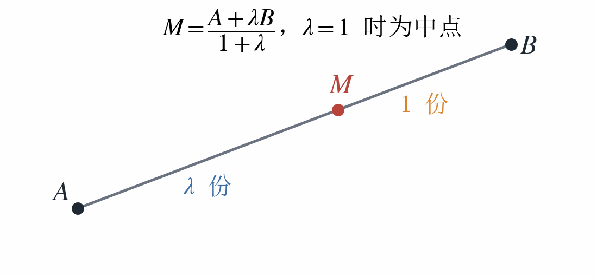
推导只需把 解出 。 时 在线段内部， 时在线段延长线上。三角形 的重心（三条中线的交点）为 ，它把每条中线分成二比一。
例1：从两点得到方向与单位方向。 设 、。用终点减起点，再求长度和单位向量：
第三个分量为零，表示这段位移在竖直方向上没有变化，并不表示整个位移为零。反方向的单位向量是 。还要注意，把三个坐标直接相加得到五，并不能代表长度：各坐标方向互相垂直，长度必须按勾股关系计算，结果是 。
1.2 线性组合与参数
用向量可以很自然地描述直线和平面。若 （），当参数 取遍全体实数时，点 从 出发沿固定方向 前后移动，轨迹是一条直线。若 ，且 不共线，那么两个独立的参数 让点在两个方向上自由移动，轨迹是一个平面。这是用向量表示几何对象的出发点。参数本身不一定代表时间；只有在明确给出运动模型时，才能把参数的变化率解释为速度。
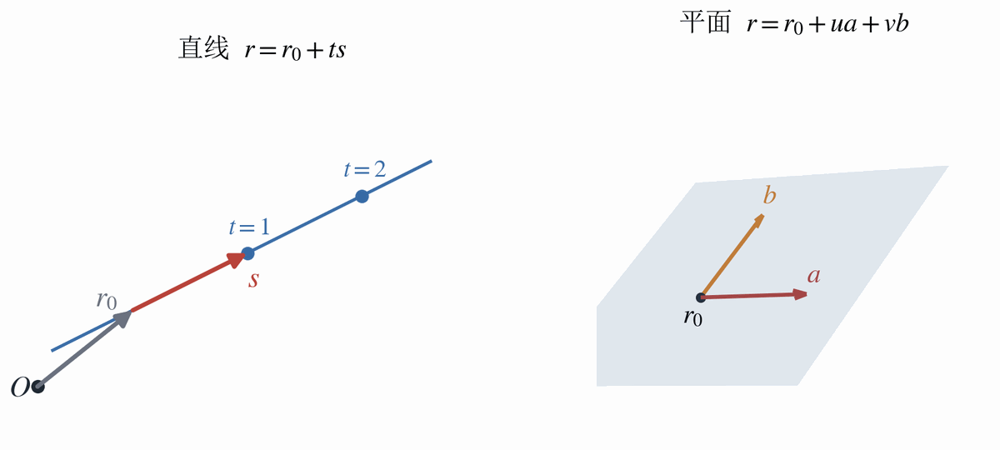
参数化的写法并不唯一。把方向向量乘以二、同时把参数改为原来的一半，得到的点集不变；把基点沿直线移动到另一个点，再相应平移参数，点集也不变。所以判断两个方程是否表示同一个图形，应比较它们所表示的点集，而不是看符号是否完全一致。
第二章 点积、投影与正交分解
2.1 点积的几何意义
对非零向量 ，点积（也称数量积、内积）定义为
其中 是两向量的夹角。左边的定义说明点积的几何含义，右边的坐标公式用于计算，两者相等可以由余弦定理推出：在以 为两边的三角形中，第三边为 ，余弦定理给出 ，再把左边按坐标展开比较，即得坐标公式。
点积的结果是一个数（标量），不是向量。它的符号反映夹角的类型：锐角时点积为正，钝角时为负，直角时为零。说“点积为零则垂直”时，非零的条件必须保留：零向量与任何向量的点积都为零，但不能据此说它与别的向量成直角。点积满足以下运算规律：
由此可以展开 ，它是余弦定理的向量形式；当 时就是勾股定理。
点积最重要的用途是计算投影。在非零向量 的方向上，单位向量为 。向量 在这个方向上的有向投影长度（标量投影）为 ，它可以为负，表示投影指向 的反方向；把这个长度乘上单位方向 ，得到投影向量：
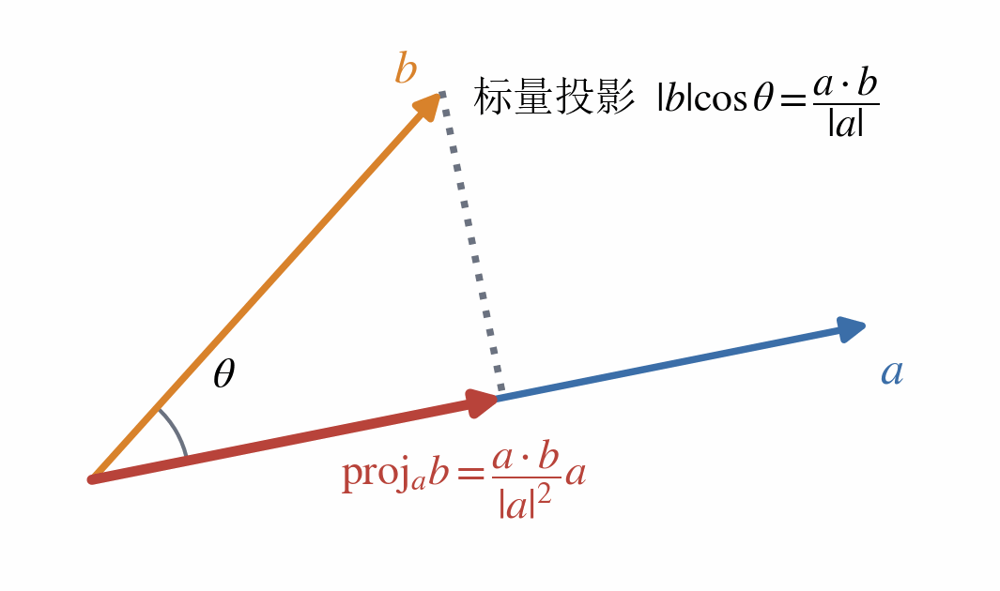
减去投影向量后，剩下的部分 与 垂直，因为 。这样，任意向量都被分解为平行于 和垂直于 的两部分，称为正交分解。后面所有点到直线、点到平面的距离公式，都来自这个分解。
例2：分清标量投影和向量投影。 取 、。先算 、，所以有向投影长度为 ；投影向量为 。垂直分量为 ，长度为 。检验：，两个分量长度平方之和为 ，符合勾股定理，与正交分解一致。
如果把 换成 ，有向投影长度变号，但投影向量不变，因为单位方向和标量系数同时变号。几何中的距离取的是垂直分量的长度，所以与人为选定的方向符号无关。
2.2 夹角与正交基
由点积的定义可得两向量夹角的余弦：。这里要区分两种对象。如果讨论两条直线的夹角，直线本身没有指向，规定取较小的那个角，即在零到九十度之间，所以要给分子加绝对值；如果讨论两个给定箭头（有方向的向量）的夹角，角可以是钝角，就不能随意加绝对值。这个差别来自对象有没有定向，并不是两个互相冲突的公式。
若取一组两两正交的单位向量作为基，任何向量都可以分解为在各基方向上的投影之和，坐标就是这些投影的长度。正交基使坐标、长度、角度都有简单公式。在一般的斜坐标系中，坐标的平方和不再等于长度的平方；本册所有长度公式都以正交单位坐标为前提。
第三章 叉积、混合积与面积体积
3.1 叉积的大小与方向
在三维右手直角坐标系中，两个向量的叉积（也称向量积） 是一个向量，它的定义包含三个方面：方向同时垂直于 和 ；长度为 ，等于以 为邻边的平行四边形的面积；指向按右手规则确定，即右手四指从第一个向量转向第二个向量（转过小于 的角），拇指所指就是叉积的方向。交换两个向量的次序，方向反转：。夹角为钝角时 仍然非负，面积不会变成负数；方向另由向量的先后次序决定。
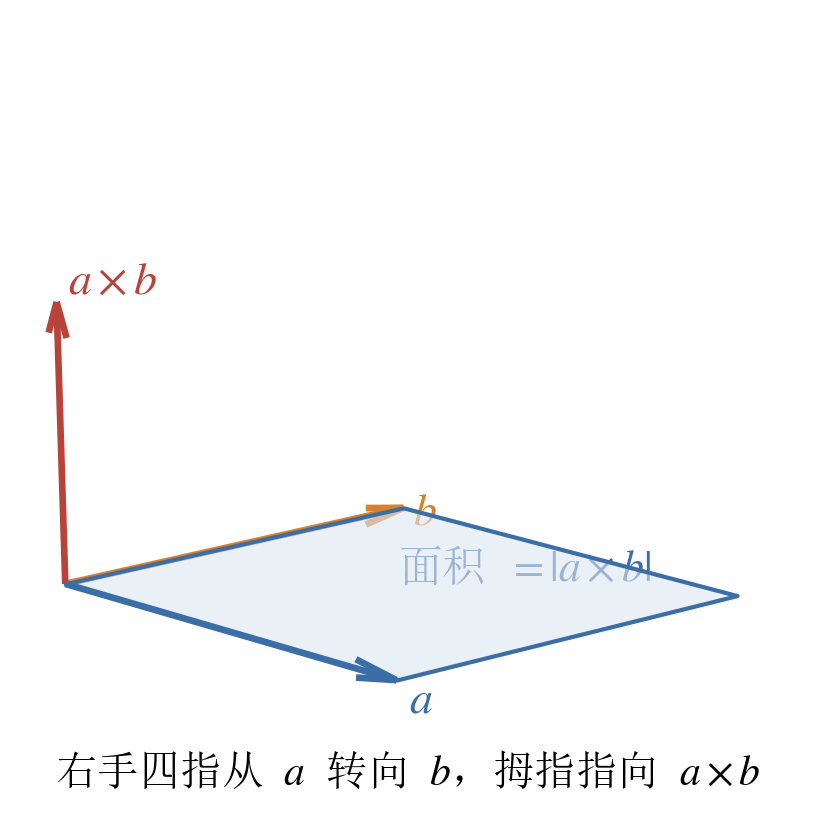
坐标公式是
这个公式并不是由行列式“定义”出来的，而是由基向量之间的叉积和分配律推出的。在右手系中，三个单位基向量按循环次序相乘：
逆着循环次序相乘则变号，例如 、；任何向量与自身的叉积为零（夹角为零，面积为零）。把 、 像多项式一样逐项相乘，共得九项。其中 、、 三项为零，余下六项按基向量归并：
它恰好等于形式行列式
按第一行展开的结果。第一行放的是向量而不是数，所以这个行列式只是一个帮助排好六项正负号的计算格式。第二项前的负号来自按行展开的符号规律，对应 这类逆循环的乘积，计算时不能遗漏。叉积本身是向量，它的长度 才是平行四边形的面积；由同一顶点出发的两条边构成的三角形，面积再除以二。
叉积满足以下运算规律：
但叉积不满足结合律，一般 。两个重要的恒等式是拉格朗日恒等式和二重叉积公式：
第一式就是 两边乘以 ，它给出不必算叉积就能求面积的办法：。第二式可按坐标逐项验证，记法是“远乘近减近乘远”的形式：结果落在 所在的平面内。
平面三角形的坐标面积公式。 平面上三点 、、 构成的三角形面积，可以把它们看成 的空间点，用叉积的第三个分量求出：
绝对值内的式子为零，说明三点共线。
例3：逐项计算并核对垂直性。 取 、。按坐标公式计算三个分量：
与原向量分别作点积：，，所以结果确实同时垂直于两个向量。平行四边形面积为 ，三角形面积为 。也可以用拉格朗日恒等式核对：，一致。交换两边次序得到 ，面积相同而方向相反。
叉积为零意味着两向量共线（线性相关）。在求平面法向量时，如果两条已知方向共线，叉积为零，说明给出的信息不足以确定平面，不能把零向量当作法向量继续写平面方程。
3.2 混合积与共面条件
三个向量的混合积定义为先作叉积、再作点积，结果是一个数：
行列式形式可以直接验证。把 的三个分量与 的对应分量相乘再相加，得到
这正是上面三阶行列式按第一行展开的结果。换句话说，混合积就是把叉积形式行列式第一行的 换成 的三个坐标。由此还能看出叉积的垂直性： 对应一个有两行相同的行列式，值为零，所以 ；同理 。
混合积的几何意义是有向体积。设 不共线，它们张成的平行四边形面积为 ，而 的方向垂直于这个底面。记 为 与 的夹角，则
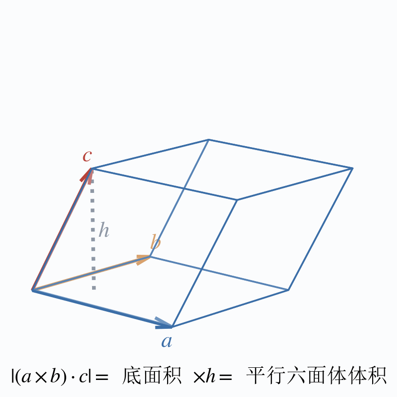
其中 是 在底面法线方向上的有向投影，也就是以 为底的平行六面体的有向高。因此混合积的绝对值等于以 为棱的平行六面体的体积；以这三个向量为棱的四面体体积是它的六分之一：
混合积的符号由三个向量的排列方式决定：循环排列（）不改变混合积，交换任意两个向量则变号，这对应于交换行列式的两行。
混合积为零，等价于三个向量共面，也等价于它们线性相关。理由是：若 不共线，则 ，混合积为零只能是 ，即 落在 所在的平面内；若 本来就共线，三个向量显然在同一平面内。反过来，三个向量共面时，平行六面体被压扁，体积为零，混合积也为零。
例4：用两种算法求混合积。 取 、、。先求叉积
再与 点乘，得 。也可以直接按第一行展开行列式：
两种算法结果一致。混合积不为零，所以三个向量不共面；以它们为棱的平行六面体体积为一，四面体体积为六分之一。
例5：由点确定体积。 设 ，另外三点为 、、。从同一点 出发的三条棱为 、、，混合积为对角线乘积六，所以四面体体积为 。必须先相减得到边向量，不能直接把四个点中任意三个点的位置坐标放进行列式，否则结果会随原点的选取而改变。
判断四点是否共面，就是取同一个基点出发的三个差向量，看它们的混合积是否为零。但如果其中三点本来就共线，即使混合积为零，也不能由它们唯一确定一个平面。“四点共面”与“三点能确定唯一平面”是两个不同的条件，需要分别检查。
求面积和体积的步骤可以归纳为：
- 选定一个公共顶点，用其他各点减去它，得到边向量。
- 求平行四边形面积，计算两边向量的叉积再取模；三角形面积再除以二。
- 求体积，计算三个边向量的混合积（三阶行列式）再取绝对值；平行六面体为该值，四面体再除以六。
- 若结果为零，说明点共线（面积）或共面（体积），图形退化。
第四章 平面中的直线
4.1 从一点和法向量推导一般式
在平面上，确定一条直线最直接的方式之一，是给出它经过的一点和一个与它垂直的方向。已知直线经过 ，非零向量 垂直于直线，称为直线的法向量。直线上任意一点 与 的连线都在直线上，所以位移 与法向量垂直，点积为零：
这称为直线的点法式方程。展开后得到 （其中 ），称为直线的一般方程（общее уравнение прямой），条件是 ，即 不同时为零。若二者都为零，方程只剩 ，其中不再含 ：它或者对一切点成立（），或者对任何点都不成立（），都不表示直线。
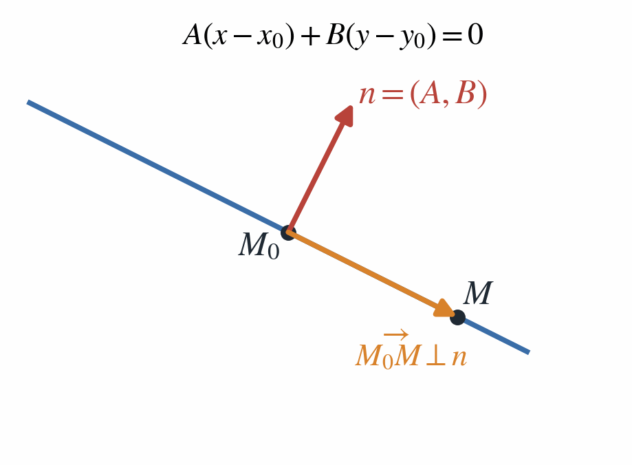
一般式的两个系数直接给出法向量 ，而不是沿直线的方向。沿直线的一个方向向量可以取 ，因为它与 的点积为零。
系数为零的几种情形各有几何意义：
- 时方程为 ，原点满足它，直线过原点。
- 时方程化为 ，横坐标固定，直线平行于纵轴 （竖直线）。
- 时方程化为 ，纵坐标固定，直线平行于横轴 （水平线）。
- 两个条件同时成立，例如 ，得到的就是纵轴本身 。
若 ，把 与 移到右边再除以 ，得到斜截式
斜率 （угловой коэффициент）等于直线与 轴正方向夹角 （倾斜角）的正切，； 是直线与 轴交点的纵坐标，称为纵截距。竖直线的 ，只能写作 ，没有有限的斜率。两点式中的斜率 也只在两点横坐标不等时才能使用。向量式和一般式不需要排除竖直线，因此适用范围更完整。
截距式。 若直线不过原点，且与两坐标轴分别交于 和 （），则方程可写成
把两个交点代入即可验证。截距式便于画图和求直线与坐标轴围成的三角形面积（），但它不能表示过原点或平行于坐标轴的直线。
法线式。 把一般式两边除以 ，使常数项为负（或零），得到
其中 是指向直线一侧的单位法向量， 是原点到直线的距离。法线式的好处是：把任意一点代入左边，得到的就是该点到直线的有向距离（见 4.3 节）。
例6：已知一点和法向量。 求过 、垂直于向量 的直线。所求直线垂直于 ，即 是它的法向量，代入点法式：
检验：，点在直线上；结果中 的系数恰为 ，与给定法向量一致。再取直线上另一点 ，代入得 ，同样成立。
例7：两点确定直线。 过 、 的直线，方向向量为 ，把两个分量交换并改变其中一个的符号，可取法向量 。点法式为 ，整理得 。把两点分别代入均得零，说明位置正确；法向量与 的点积为零，说明方向也正确。斜截式是 ，两式描述同一条直线。
4.2 由方向向量写直线：标准方程、参数方程、两点式与点斜式
4.1 节从法向量出发写直线，这里改从沿直线的方向出发。两种出发点可以互相转换：法向量 对应方向向量 ，方向向量 对应法向量 。
标准方程。 已知直线过 ，且平行于非零向量 ， 称为方向向量（направляющий вектор）。点 在直线上，当且仅当 与 平行，而两个平面向量平行等价于对应坐标成比例：
这称为平面直线的标准方程或典范方程（каноническое уравнение прямой）。比例式的真正含义是交叉相乘后的 ，这个形式在 或 为零时仍然成立。因此，若 ，分式写法只是一种约定，直线就是竖直线 ；若 ，直线是水平线 。
参数方程。 把标准方程两边的公共比值记作 ：
拆成两个等式，分别乘以分母再移项，得到参数方程（параметрические уравнения прямой）：
对应点 ； 对应从 沿 走一个 的长度； 为负时沿 的反方向移动。 取遍全体实数，点就走遍整条直线。参数式不含除法，方向分量为零时不需要特殊处理，这一点与 1.2 节的向量式 相同。
两点式。 已知直线过 、，取 代入标准方程：
这就是过两点的直线方程（уравнение прямой, проходящей через две точки）。几何上，分别以 和 为斜边作两个直角三角形，直角边平行于坐标轴；三点共线时两条斜边方向相同，两个三角形相似，对应直角边成比例，得到同一个式子。两点式只是标准方程的特例。若 ，直线为 ；若 ，直线为 。
点斜式。 若直线不竖直，方向向量的 ，斜率 。对直线上任一点 ，以 为斜边的直角三角形给出 ，去分母得
这是过点 、斜率为 的直线方程（уравнение прямой с угловым коэффициентом）。 时两边都为零，同样成立。展开得 ，即斜截式中的 。竖直线没有斜率，不能写成点斜式，只能写成 。
平面直线各种方程的适用条件归纳如下：
- 一般式 ：能表示所有直线，系数给出法向量。
- 点法式、标准方程、参数方程：能表示所有直线，分别需要一点加法向量或一点加方向向量。
- 两点式：需要两点的横坐标不同、纵坐标也不同，否则改写为 或 。
- 点斜式、斜截式：不能表示竖直线。
- 截距式：不能表示过原点或平行于坐标轴的直线。
例8：同一条直线的四种写法。 直线过 ，方向向量 。
标准方程为 ，交叉相乘得 ，整理成一般式 。
参数方程为 、。取 得点 ，代入一般式 ，在直线上。反过来，由第一式解出 ，代入第二式得 ，两边乘三整理，回到 。
斜率为 ，点斜式为 ；两边乘三得 ，仍是同一个一般式。
四种写法给出同一个点集。一般式的系数 是法向量，与方向向量 的点积为 。
例9：两点式。 过 、 的直线，
两边乘四得 ，整理为 。两点代入均为零；常数项为零，说明直线过原点，原点 代入也确实成立。
4.3 点到直线距离与垂足
点到直线的距离，是从这个点到直线上所有点的连线中最短的那一条，它沿着法线方向。所以，从直线外一点 到直线上任意一点 作连接向量，把它投影到法向量上，投影长度的绝对值就是距离：
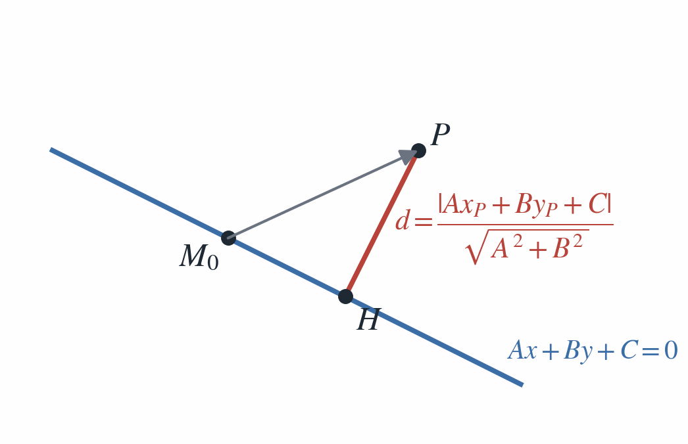
最后一步用到了 在直线上，即 ，所以 。分母的作用是把法向量归一化。若把整个方程乘以十，分子和分母同时乘十，距离保持不变。这也说明，不能只把点代入方程左端，就把所得的值当作距离。
代入值 的符号也有意义：在直线同一侧的点代入后符号相同，在两侧的点符号相反；值为零表示点在直线上。这常用来判断两点是否位于直线同侧。
垂足 位于从 出发、沿法向量方向的直线上，可设 。把它代入直线方程，解出
两条平行直线之间的距离。 平行直线可以写成 与 （先把两个方程的 系数化成相同）。在第一条直线上任取一点，用上面的公式求它到第二条直线的距离，得到
注意必须先把两式的 化为相同，否则不能直接相减常数项。
例10：同时求距离和垂足。 对直线 ，点 的代入值为 ，法向量的模为 ，距离为 。由 ，垂足为
检验：，垂足在直线上； 是法向量的倍数，垂直关系成立。只知道垂直方向不能确定垂足，必须同时要求它落在直线上。
例11：代入值为负时的距离。 求点 到直线 的距离。读出 ，代入值为
取绝对值得二十；分母 ，所以 。代入值为负只说明 位于法向量 所指方向的另一侧，距离仍然取绝对值。由垂足公式，，
检验：， 在直线上；，与公式结果相同。
求点到直线的距离与垂足，步骤如下：
- 把直线化为一般式 ，读出法向量 。
- 计算代入值 。
- 距离为 。
- 若需要垂足，计算 ，得 。
- 验算： 代入直线方程为零，且 平行于法向量。
4.4 两直线的位置关系、夹角与交点
两条平面直线的位置关系，先由方向判断是否平行；平行时再由位置判断是否重合；不平行时必有唯一交点。判断可以用斜率，也可以用法向量或方向向量。三种写法都来自同一个向量夹角公式，只是适用的方程形式不同。
斜率判据。 设 、，方向向量可取 、。
平行条件（условие параллельности）： 且 ；若截距也相等，两线重合。
垂直条件（условие перпендикулярности）：两方向向量的点积 ，即 。
夹角：设两线倾斜角为 ，由正切差角公式
不加绝对值时，它给出从 逆时针转到 的有向角；求两直线的较小夹角时取绝对值。俄语教材常把正切写作 。分母为零正好是垂直的情形，此时公式没有定义，应改用垂直条件。竖直线没有斜率，斜率判据不适用。
法向量与方向向量判据。 对一般式 ，法向量为 。每条直线的法向量都是把直线方向转过一个直角得到的，所以两个法向量的夹角与两直线的夹角相等或互补。取锐角（угол между прямыми）：
对标准方程，用方向向量 写出同样的式子：
分子加绝对值的理由见 2.2 节：直线没有定向，把法向量换成反向量，夹角从 变为 ，表示的仍是同一对直线。由此得到垂直条件 （或 ），以及平行条件“两法向量成比例”，即 ；后者还要比较常数项，才能区分平行与重合：若 ，两线重合；若前两个比相等而第三个不等，两线平行。这两种判据对竖直线也适用。
交点。 交点同时在两条直线上，它的坐标必须同时满足两个方程，所以求交点就是解二元一次方程组。系数行列式
不为零时恰有一个解，对应两线相交；为零时方程组无解或有无穷多解，分别对应平行与重合。
过两直线交点的直线束。 若两直线 、 相交，则对任意不全为零的实数 ，方程
表示一条经过交点的直线，因为交点使两个括号都为零。反过来，过交点的每条直线都能这样写出。解题时常取 ，用一个参数 表示除 以外的全部直线，再由附加条件（如过某点、平行于某方向）确定 ，这样不必先求出交点坐标。
两直线夹角的平分线。 到两条直线距离相等的点，满足
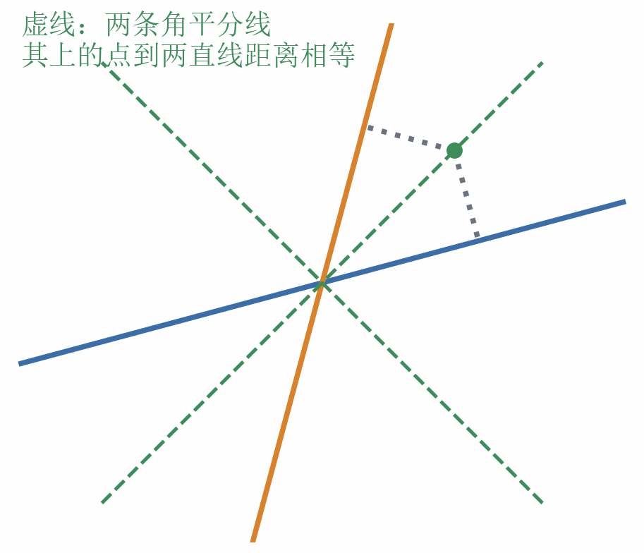
取正、负号分别得到两条互相垂直的角平分线。
例12：同一对直线的交点与夹角。 设 、。
求交点： 中 的系数为 ，先解出 ，代入 ：
回代得 ，交点为 。检验：，。
求夹角：法向量 、，
改用方向向量 、，分子为 ，分母仍为 ，结果相同。再用斜率 、：
由 得 ，正切正是 。三种算法给出同一个角。
例13：法向量夹角为钝角的情形。 求直线 与 的夹角。法向量 、 的点积为 ，两模之积为 。不加绝对值时，法向量夹角的余弦为 ，对应约 ；两直线的夹角是它的补角：
用斜率核对：、，
由 得 ，，一致。所以答案可以写成 ，也可以写成 。
例14：过定点作已知直线的垂线。 求过 、垂直于 的直线。
向量法：已知直线的法向量 垂直于已知直线，而所求直线也垂直于已知直线，所以这个法向量平行于所求直线，可以作为所求直线的方向向量；取与它反向的 也可以，因为直线没有定向，方向向量只需平行即可。于是所求直线的法向量为 ，点法式为
斜率法：已知直线化为 ，。由 得 ，点斜式 ，两边乘五整理，同样得到 。检验：，点在直线上；两法向量 、 的点积为 ，确实垂直。
过定点作已知直线 的平行线或垂线，可直接写出：平行线为 （法向量不变）；垂线为 （法向量换成原来的方向向量）。
4.5 三角形中的直线计算
三角形问题把前面几节的工具串联起来：边所在的直线用两点式，中线（медиана）先求对边的中点，高（высота）用垂直条件确定方向、用点到直线的距离求长度。
例15：三角形的边、中线与高。 已知三角形顶点 、、。
第一，边 的方程（уравнение стороны）。由两点式
也可以先求斜率 ，用点斜式 得到同一方程。 代入均为零； 代入得 ，说明三点不共线，确实构成三角形。
第二，边 的中点。中点坐标是两端点坐标的平均：
第三，中线 。方向向量 ，乘以 后取 ，比例不变而分数消去：
检验： 代入 ， 代入 。
第四，高 的方程。 过 且垂直于 。 的法向量 平行于 ，所以 的法向量可取 ：
两法向量的点积 ，垂直关系成立。
第五，高 的长度，就是 到直线 的距离：
作为核对，联立 与 的方程求垂足。系数行列式为 ，解得 。于是
其中 。距离公式不需要先求垂足，联立法则同时给出了垂足的位置。
还可以用 3.1 节的坐标面积公式核对：；另一方面 ，两者一致。
第五章 空间平面
5.1 方程与参数形式
空间中的平面与平面上的直线类似，可以由一点和一个法向量确定。已知平面经过点 （位置向量 ），非零法向量为 ，平面上任意一点 与 的连线都垂直于 ，于是
左式是向量形式，右式是展开后的一般方程，其中 。一个平面上有两个独立的方向，法向量只限制了垂直于平面的那一个方向。若已知平面上三个不共线的点 ，两条边向量 、 都在平面内，它们的叉积就垂直于平面，可取 。同一平面的方程乘以任意非零常数，表示的点集不变。若 ，方程要么是恒等式、表示整个空间，要么是矛盾式、表示空集，都不再是平面。
一般式中系数为零的情形同样有几何意义： 时平面过原点；缺少某个变量（如 ，方程中没有 ）时，法向量垂直于该坐标轴，平面平行于该坐标轴；缺少两个变量（如 ）时，平面垂直于剩下那个变量的坐标轴。
截距式与法线式。 若平面与三条坐标轴分别交于 、、（均不为零），方程可写成
把一般式除以 ，使常数项非正，得到法线式 ，其中 是单位法向量的方向余弦， 是原点到平面的距离。
例16：三点确定平面。 设 、、。两条边为 、，叉积为 。所以平面为 ，即 ，它也就是截距都为一的截距式。参数式为
把参数式代入一般式，，各参数项全部抵消；反过来，对满足一般式的点，可令 ，得到 ，因此参数式没有遗漏任何点。这一反向验证说明两种方程确实等价。
俄语课堂中， 称为平面的一般方程（общее уравнение плоскости）， 称为平面的法向量（вектор нормали）。板书把点法式 称为 нормальное уравнение；不少俄语教材中这个名称专指法向量已经单位化的形式 ，阅读时应按上下文区分。
三点式。 过不共线三点 的平面，可以不先算法向量，直接写成行列式：
三行依次是 、、。由 3.2 节，这个行列式就是三者的混合积，等于零表示三个向量共面，也就是点 落在三点确定的平面上。展开来看，它等于 ，其中叉积正是平面的法向量，所以三点式是“先用叉积求法向量、再写点法式”两步合成的一步。若三点共线，后两行成比例，行列式对一切 都为零，方程不再确定平面。
对上例三点，按第一行展开：
即 ，与叉积法的结果相同。
求平面方程的常见情形可以归纳为：
- 已知一点和法向量：直接写点法式。
- 已知不共线三点：用叉积求法向量再写点法式，或直接写三点式行列式。
- 已知一点和平面内两个不共线方向：两方向的叉积作法向量。
- 已知一点且平行于已知平面：沿用已知平面的法向量。
- 已知平面经过一条直线：用 5.3 节的平面束，或用直线方向与另一条已知方向的叉积作法向量。
5.2 点到平面的距离和镜像
与平面直线的情形一样，把连接向量投影到法向量上，得到点到平面的距离：
令 （代入值），垂足是 ，关于平面的对称点是 ，即从 出发沿法向量走两倍的投影距离。距离、垂足和对称点都来自同一个正交分解。
例17：垂足与对称点。 对 ，点 ，有 、。垂足为 ，即原点，距离为 ，对称点为 。当然不能把原点当作任意平面的垂足；本例成立，是因为点 的位置向量恰好平行于法向量，而平面又过原点。
两个平面的法向量若成比例，两平面可能平行，也可能重合。例如 与 重合，而与 平行。必须连同常数项一起比较。平行平面 与 之间的距离为
前提同样是先把两个方程的 化为相同。例如 与 ，先把后者化为 ，距离为 。
不平行的两个平面的较小夹角满足 ，写成坐标就是
它与 4.4 节两条平面直线的夹角公式是同一个向量夹角公式，只是空间向量有三个坐标，点积和模长都要包含第三项。两平面垂直的条件是 ；平行（或重合）的条件是 。
例18：两平面夹角的余弦。 求 与 的夹角余弦。法向量 ； 中没有 项， 的系数是零，所以 ，不能漏写这个零，也不能把 挪到第二个位置。于是
。如果只取前两个坐标计算，会得到 ，约为 。丢掉第三个坐标相当于把法向量投影到 平面上，方向已经改变，结果自然错误。
5.3 平面束
与平面上的直线束类似，若两个平面 与 相交于一条直线 ，则对不全为零的 ，
表示一个经过交线 的平面，因为 上的点使两个括号同时为零；并且经过 的每一个平面都能这样写出。全体这样的平面称为过 的平面束。
例：过交线和一点的平面。 求经过平面 与 的交线、并且经过点 的平面。设所求平面为 ，代入 ：，得 。所求平面为 ，即 。检验：点 代入 。这个方法不需要先求出交线的方程。用 的写法会遗漏 本身，若答案恰好是 ，需要单独检查。
第六章 空间直线与平面交线
6.1 直线的多种表达
空间直线由一点和一个方向确定。过点 、方向为非零向量 的直线写作
前者是向量式，后者是参数方程。当三个方向分量都不为零时，可以从三个式子中各解出 并令它们相等，消去参数，得到对称式（标准方程）
若某个方向分量为零，例如 ，应把 单独保留，只对其余非零分量写分式。方向分量为零表示对应坐标恒定不变，而不是该坐标“没有约束”。例如 表示 且 ，绝不能写出除以零的式子。
俄语教材把对称式称为直线的典范方程（каноническое уравнение прямой），中文教材也称点向式或标准方程；有的译文把它误译成“正则方程”。俄语课堂上常见分母为零的写法，例如过点 、方向 的直线写成
这不是在做除法，而是一种约定：连比式的本义是 ，第一个分量给出 ，所以分母为零时分子也必须为零。保留零是为了让三个分母直接读出方向向量的三个坐标。按上一段的规范写法，它等价于
阅读俄语板书时应按这一约定理解，自己书写时仍以拆开的方程组为准。
空间直线不能只用一个方程表示。空间中的点有三个自由坐标，一个（相容的线性）方程消去一个自由度，剩下二维，是一个平面；直线是一维的，必须消去两个自由度，所以要两个方程，几何上就是两个平面的交线。对称式看起来像一个等式，其实连等号 同时表示 与 两个方程，每个方程都是一个平面。平面直角坐标系中只有两个坐标，一个方程 就足以表示直线；到了空间多一个坐标，就要多一个方程。6.3 节用秩的语言给出同一结论。
过两点 的空间直线，取方向 ，得到两点式
空间直线还可以看作两个不平行平面的交线，写成方程组形式（一般方程）；6.2 节讨论怎样从这种形式求出点和方向。
6.2 两个平面的公共直线
两个不平行平面的交线同时位于两个平面内，所以它的方向同时垂直于两个法向量，可取 。但方向只确定了一族互相平行的直线，还要联立两个平面方程求出一个公共点，才能确定是哪一条。找公共点时，可以尝试令某个坐标为零，把问题化为两个方程两个未知数；若这样做导致矛盾，并不说明交线不存在，只说明交线与所选的坐标平面平行，应换一个坐标再试，或直接消元得到参数形式。
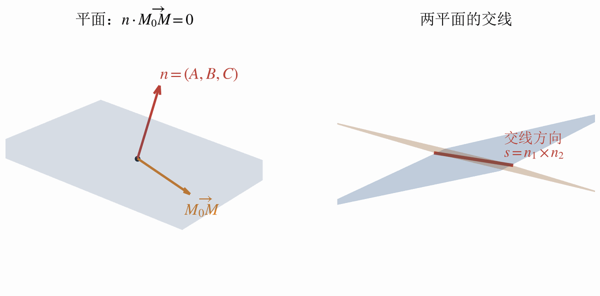
例19：带有符号核验的交线。 对
两个法向量为 、，叉积为 。再找一个公共点：取 ，得到 、，消元得 。所以交线为
验算时把参数式代回两个平面方程，常数部分和含 部分应分别为零。代回第一个平面，常数部分是 ，含 部分的系数是 ；代回第二个平面，常数部分 ，含 部分 ，也都为零。若另一份解答写成经过 的同方向直线，把该点代回原第一个平面得 ，而不是零，因此它不是同一条直线；只有把第一个方程的常数改为负五时，该点才满足方程。由此可以判断两份文字方程互不相容，但不能仅凭旧会话中对图片的解释，就断言原课件一定印错。
讲解例：一般方程化为典范方程。 直线由
给出，要写出它的典范方程，需要求出一点 和方向向量 。两个法向量为 、。方向取叉积：
按第一行展开，三个分量依次为
即 。方向向量乘以 不改变直线，取 。再找一点：取 ，得 、，两式相加 ，，，所以 。典范方程为
验算： 代入两平面，，；方向与两法向量垂直，，。若取 ，得到 ，方程不同但表示同一条直线，只是含分数。
求两平面交线的步骤是：
- 检查两个法向量是否成比例；若成比例，两平面平行或重合，没有唯一的交线。
- 计算 作为交线方向。
- 令某个坐标取定值（通常为零），解另外两个坐标，得到一个公共点；若无解，换另一个坐标。
- 写出参数式或对称式。
- 把参数式代回两个平面方程，检验常数部分和含参数部分都为零。
6.3 方程秩与几何维数
线性方程组的秩决定了它的解集是什么几何对象。在三维空间中，一个有解（相容）的线性方程组，若系数矩阵的秩为一，解集是一个平面；秩为二，是一条直线；秩为三，是一个点；秩为零（方程全是 ），是整个空间。统一地说，解集的维数是 。若增广矩阵的秩大于系数矩阵的秩，方程组无解，几何上就是没有公共点。这个维数关系只适用于线性约束构成的相容方程组，不能用它断言任意一个三元方程都表示平面，例如 表示的是球面。
第七章 相对位置、夹角与距离
7.1 直线与平面
判断直线与平面的关系，最直接的方法是把直线的参数式 代入平面方程 ，得到关于 的一次方程
分三种情况：若 ，方程有唯一解，直线与平面有唯一交点；若 但常数项不为零，方程无解，直线平行于平面；若两项都为零，方程对一切 成立，整条直线位于平面内。这样分类比单独记忆三幅图更直接。
由此得到两个常用条件：直线平行于平面（或在平面内）的条件是方向向量垂直于法向量，，即 ；直线垂直于平面的条件是方向向量平行于法向量，即 。
例20：求交点和线面角。 直线 与平面 ：代入得 ，，交点为 。平面的法向量为 ，方向向量的模为 ，所以直线与平面的夹角 满足
这里用正弦，是因为直线与平面的夹角，等于直线与它在平面上投影的夹角，它与“方向向量和法向量的夹角”互为余角。若误用余弦，求出的将是另一个角。可以用极端情形核对：方向平行于法向量时，直线垂直于平面，，；方向垂直于法向量时，直线平行于平面，。
讲解例：数字不整齐的交点与线面角。 直线 与平面 。参数式为 、、，代入平面：
代回得交点 ，其中 ，。验算：。夹角由 、 求出：，，，
交点坐标为分数并不说明算错，关键是代回检验。两直线夹角、两平面夹角用余弦，线面角用正弦，三者的区别只在于参与运算的是方向向量还是法向量。
讲解例：过一点且平行于两条直线的平面。 求过 、平行于直线 与 的平面。由上面的条件，平面平行于直线等价于法向量垂直于方向向量，所以法向量同时垂直于 与 ，取叉积：
约去公因子二得 。点法式 展开，常数项 ，得
验算： 代入 ；，。若两条直线方向平行，叉积为零，平面不唯一，需要另给条件。
7.2 两条空间直线
空间中两条直线有四种位置关系：重合、平行、相交、异面。判断步骤是：
- 比较方向向量 是否成比例。
- 若成比例，检查一条直线上的一点是否在另一条直线上：在，则重合；不在，则平行。
- 若不成比例，令基点差 ，计算混合积 。
- 混合积为零，两直线共面，又不平行，所以相交，可联立参数式求交点；混合积不为零，两直线异面。
与平面中不同，空间中两条不平行的直线不一定相交，因为它们可能不在同一个平面内。第 3 步必须在确认方向不平行之后才使用：若两直线平行，，混合积恒为零，并不能推出相交。
讲解例：直接联立求交点。 也可以不先算混合积，直接联立参数式。设
两条直线的参数必须用不同字母，因为交点在两条直线上对应的参数一般不同： 为 ； 为 。令坐标相等，得三个方程两个未知数：
由前两式 、。第三式必须检验：左边 ，右边 ，成立，两直线相交，交点为 。若第三式不成立，前两式照样有解，但两直线异面，没有交点；若方向向量成比例，则平行或重合，没有唯一交点。检验第三个方程，等价于上面混合积为零的条件。
两条空间直线的夹角，与平面情形相同，用方向向量计算：
异面直线也有夹角，定义为把它们平移到相交后所成的较小角，所以公式同样适用。
7.3 点线距离与异面直线距离
点 到空间直线 的距离为
分子是以 和 为邻边的平行四边形的面积，除以底边长度 就得到高，也就是距离。也可以用最小化的方法推导：设垂足对应参数 ，要求连接向量 与 垂直，于是 。两种推导一个用面积，一个用投影，结论一致。
例21：点到空间直线。 点 ，直线为 。点积法：，垂足为 ，距离为 。叉积法：，模为 ，除以方向的模 也得一。直接取点到基点的距离 ，只是某一条连接线段的长度，并不是最短距离。
若两条直线方向不平行，它们的公垂线（同时垂直于两条直线的线段）方向为 ，所以两直线间的距离等于基点差在这个方向上的投影长度：
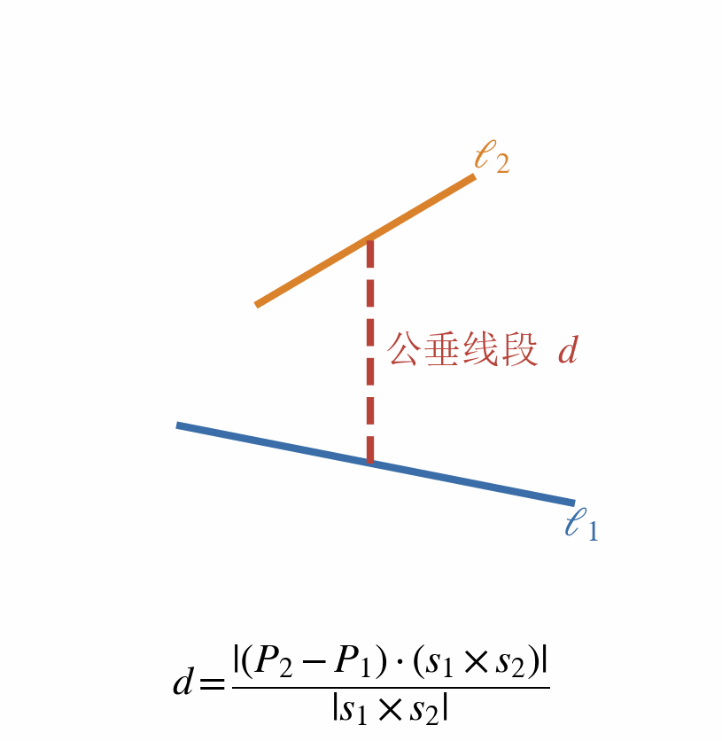
例如 （即 轴）、，方向叉积为 ，基点差 也在这个方向上，距离为一；距离不为零，说明两直线异面。若两直线平行，分母为零，这个公式不能使用，应改为求一条直线上某一点到另一条直线的距离。公式的分母往往直接暴露了它的适用条件，计算前应先判断分母是否可能为零。
求距离的常见情形归纳如下：
- 点到平面直线、点到平面：代入值的绝对值除以法向量的模。
- 平行直线之间、平行平面之间：先把方程系数化为相同，常数项之差的绝对值除以法向量的模。
- 点到空间直线：叉积的模除以方向向量的模。
- 异面直线之间：混合积的绝对值除以两方向叉积的模。
- 线段、射线等有界对象：先按无界对象求垂足，再检查垂足是否在范围内（见 10.1 节）。
第八章 二次曲线与坐标变换
8.1 圆、椭圆、双曲线与抛物线
二次曲线都可以由距离关系来定义，标准方程是在适当的坐标系中把定义翻译成代数式的结果。
圆是到一个固定点（圆心）的距离等于定值（半径）的点的集合。圆心为 、半径为 的圆为 。
椭圆是到两个固定点（焦点）的距离之和等于常数 的点的集合。把焦点放在 ，化简得标准式 ，其中 ，三个参数满足 。 称为长半轴， 称为短半轴。
双曲线是到两个焦点的距离之差的绝对值等于常数 的点的集合，标准式为 ，此时 。
同样的字母 在椭圆和双曲线中满足不同的关系，不能混用。
抛物线是到一个焦点与到一条准线距离相等的点的集合。取焦点 、准线 ，其中 ，由距离相等得
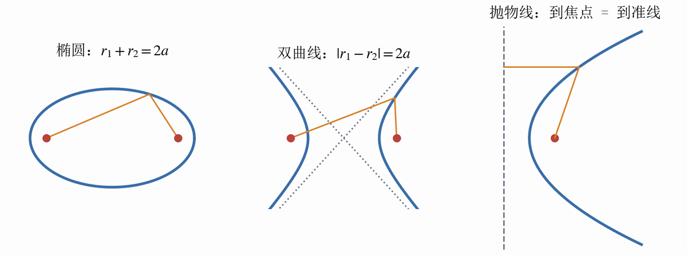
两边平方，展开后消去两边相同的 和 项，得到 。有的教材写作 ，这只是参数命名不同，焦点横坐标分别为 与 。使用公式前应先确认所用的定义和参数。
焦半径。 曲线上一点到焦点的距离称为焦半径，在标准式下有简单的表达。椭圆上点 到左、右焦点的距离分别为 与 （，见 8.3 节），两者之和正是 ；双曲线右支上的点到左、右焦点的距离分别为 与 ，两者之差为 ；抛物线 上的点到焦点的距离为 ，就是它到准线的距离。
8.2 平移与旋转的作用
例22：通过配方识别曲线。 对 ，分别对同一个变量配方。，，所以
整理得 ，两边除以 36：
这是一个椭圆，中心为 ，长半轴 ，短半轴 ，，焦点为 。配方时产生的常数（这里的 和 ）不能漏掉，否则中心可能正确而半轴长度错误。
用配方识别二次曲线的步骤是：
- 把含 的项和含 的项分别归组，提出平方项的系数。
- 对每组配方，记下配方产生的常数。
- 把所有常数移到等号右边，得到 的形式。
- 根据系数符号和右端判断类型：同号且与右端同号为椭圆（系数相等时为圆）；异号为双曲线（右端为零时退化为两条相交直线）；只有一个平方项为抛物线。
- 化为标准式，读出中心（或顶点）、半轴，再求焦点等要素。
一般的二次曲线方程还含有交叉项：。它的二次部分可以写成 ，其中 是实对称矩阵。选取 的正交特征向量作为新坐标轴，交叉项消失，这正是线性代数中的正交对角化。以 为例，令 、，左边 ，方程变成 ，即 ，是两条平行直线，而不是椭圆。二次方程并不一定给出非退化的曲线，退化情形也是完整分类的一部分。
类型判别与旋转角。 不必真正旋转坐标，也能由系数判断曲线的类型。记 ：
因为 等于 的两个特征值之积：同号对应椭圆，异号对应双曲线，有一个为零对应抛物线（这里说的是“型”，具体还可能退化为点、直线或空集）。上例 ，，属于抛物型，退化为两条平行直线。若要消去交叉项，把坐标轴旋转角度 ，其中
当 时取 。上例 ，所以旋转 ，与选取的 一致。
8.3 焦点、准线与离心率的统一关系
椭圆、抛物线和双曲线还可以用同一种方式定义：到焦点的距离与到准线的距离之比为常数。这个比称为离心率，记作 。非圆的椭圆 ，抛物线 ，双曲线 。圆可以看作椭圆在 时的极限，但这时准线跑到无穷远，有限位置的准线公式不再适用。离心率越接近零，椭圆越接近圆；越接近一，椭圆越扁。
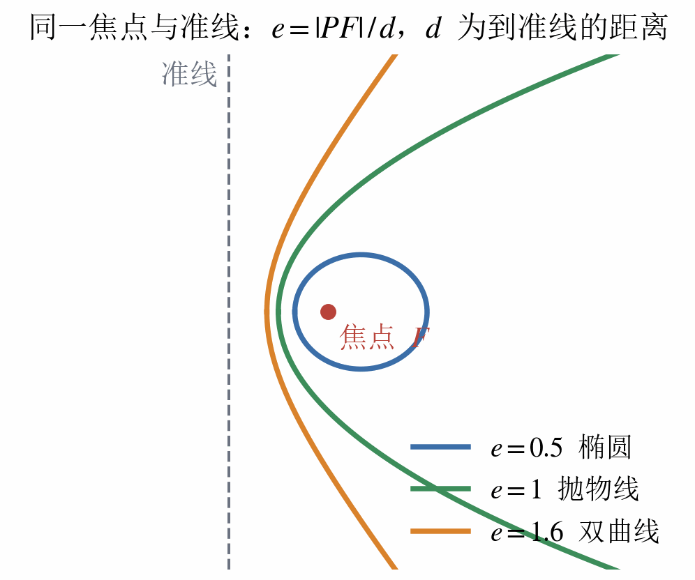
对长轴（或实轴）沿 轴、中心在原点的标准式，椭圆有 、；双曲线有 、。两者的焦点都是 ，相应的准线都可以写成
焦点与准线按同侧的符号配对。椭圆与双曲线的这些公式形式相同，但参数约束不同。例如椭圆 有 、、准线 ；双曲线 则有 、、准线 。只把中间的加号改成减号，就必须重新计算 。
双曲线的渐近线可以这样得到：把标准双曲线方程两边除以 ，有
当 很大时，最后一项趋于零， 趋于 ，所以两条渐近线为 。把中心平移到 后，渐近线改为 。若标准式中带正号的是 项，实轴沿 轴，焦点和渐近线也要相应交换坐标，不能仍把焦点放在 轴上。 的双曲线称为等轴双曲线，两条渐近线互相垂直，离心率为 。
对抛物线 （），焦点为 ，准线为 ，顶点为原点，开口向右。若改为 ，开口向左，焦点和准线的符号同时改变；写成 则开口向上或向下。这些形式都可以由反射或交换坐标得到，不必把四个方向当成四条互不相关的定义。
8.4 参数表示与曲线切线
椭圆可以用参数表示为
代入标准式，左边为 ，所以这些点都在椭圆上。需要注意，一般椭圆中的 只是参数（称为离心角），并不等于位置向量与 轴的几何夹角；只有圆（）的情形才可以这样解释。双曲线 的右支可以用双曲函数表示为 ，因为 。抛物线 可以取 ， 取遍全体实数时覆盖整条抛物线。
设点 确实位于相应的曲线上。用隐函数求导，或者用方程的梯度作为法向量，分别得到各曲线在 处的切线：
以椭圆为例说明来历：方程 的梯度为 ，它在 处垂直于切线，所以切线为 ；展开并利用 ，即得上式。记法是把方程中的 换成 、 换成 、 换成 。
例如椭圆上点 处的切线为 ，点 处的切线为 ，竖直切线也包含在同一个公式里。抛物线在顶点 处的切线为 。如果把不在曲线上的点随意代入这些公式，得到的直线通常有别的几何含义（称为极线），不能称作“该点处的切线”。对平移过的曲线，应先用 代入标准形式，求出切线后再换回原坐标。
8.5 圆锥曲线的由来：平面截圆锥
椭圆、双曲线和抛物线合称圆锥曲线，因为它们都可以由一个平面去截一个圆锥面得到。设圆锥面的轴竖直，母线（过顶点、在锥面上的直线）与轴的夹角为 ，截平面与轴的夹角为 （），截平面不过圆锥顶点。截线的类型由两个角的大小关系决定：
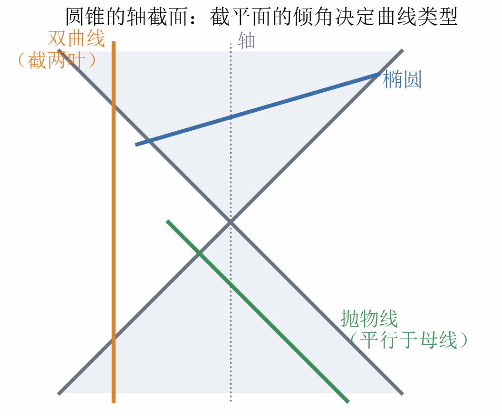
- ，截平面垂直于轴：截线是圆。
- ，截平面比母线更“平”，只与圆锥的一叶相交且截线封闭：截线是椭圆。
- ，截平面平行于某一条母线：截线向一端无限延伸，是抛物线。
- ，截平面比母线更“陡”，与圆锥的上下两叶都相交：截线是双曲线，两叶各得一支。
若截平面经过顶点，得到的是退化情形：一个点、一条直线（母线）或两条相交直线，它们对应 8.2 节二次方程的退化情况。离心率与两个角的关系是 ，代入上面四种情况，依次得到 、、、，与 8.3 节的分类完全一致。
丹德林球与焦点性质。 为什么平面截圆锥得到的封闭曲线恰好满足“到两焦点距离之和为常数”？比利时数学家丹德林给出了一个直观的证明。在圆锥内放入两个球，使每个球都与圆锥面相切（切点构成一个水平圆），同时与截平面相切，一个在截平面上方，一个在下方。两个球与截平面的切点记为 。
设 是截线上任意一点。过 的母线与两个球的切点圆分别交于 、。从球外一点向球引的所有切线段长度相等，而 与 都是从 向上方球引的切线段，所以 ；同理 。于是
是两个水平切点圆之间沿母线的距离，对所有母线都相同，与 的位置无关。所以截线上每一点到 的距离之和都等于同一个常数，截线是以 为焦点的椭圆。对双曲线可以作同样的论证（两个球分别在圆锥的两叶中，得到距离之差为常数）；对抛物线只能放入一个球，切点给出焦点，而球的切点圆所在平面与截平面的交线就是准线。
8.6 圆锥曲线的极坐标方程
8.3 节的统一定义“到焦点的距离与到准线的距离之比为 ”，在以焦点为极点的极坐标中有特别简洁的形式。把焦点放在原点，准线取为 （，在焦点左侧），曲线上一点的极坐标为 ，则它到焦点的距离为 ，到准线的距离为 。由定义 ，解出 ：
这个方程对椭圆、抛物线、双曲线同时成立，只是 的取值不同。常数 是 时的 ，即过焦点且垂直于对称轴的弦的一半，称为半通径。在标准式下，椭圆和双曲线的半通径为 ，抛物线 的半通径为 。
对椭圆，分母 恒为正， 在 时最小、 时最大，分别为 和 ，即焦点到两个顶点的距离。对抛物线， 时分母趋于零，，曲线向右无限延伸。对双曲线，分母在 时为零，这两个方向正是渐近线的方向。
这一形式在物理中很重要：行星绕太阳的轨道是以太阳为一个焦点的椭圆，用极坐标方程描述最为自然。例如取 、，则焦点到近端顶点的距离为 ，到远端顶点为 ，长轴 ，，，，正是椭圆 。
8.7 直线与圆锥曲线
直线与圆锥曲线的位置关系，以及交点构成的弦，是圆锥曲线计算中最常见的问题。基本方法是联立方程、消元，得到一个一元二次方程，再用判别式和根与系数的关系（韦达定理）处理，通常不必求出交点的具体坐标。
位置关系。 把直线 代入圆锥曲线方程，消去 ，得到 。若 ，判别式 为正、为零、为负，分别对应两个交点、相切、没有公共点。若 ，方程退化为一次方程，只有一个交点，但这不是相切：对双曲线，这时直线平行于一条渐近线；对抛物线，这时直线平行于对称轴。
弦长公式。 设直线 与曲线交于 、，由于 ，
和 直接由韦达定理读出，不必解方程。若直线竖直，没有斜率，则直接用纵坐标之差。
中点弦。 若已知弦 的中点 ，求弦所在直线的斜率，可以用点差法。对椭圆 ，把 的坐标分别代入方程再相减：
用 、、 代入，得到
点差法只用到“两点都在曲线上”，求出的直线必须再检验确实与曲线有两个交点；对双曲线，中点位置不当时这样的弦可能不存在。
已知斜率的切线。 斜率为 的直线与圆锥曲线相切，可以由判别式为零求出截距。结果是
椭圆对任何斜率都有两条切线；双曲线只有在 ，即 （切线比渐近线更陡）时才有切线；抛物线要求 。
例27：过焦点的弦长。 椭圆 中 、、，右焦点 。求过 、斜率为一的弦长。直线为 ，代入椭圆并乘以 12：，即 。判别式 ，有两个交点。由韦达定理 、，所以
也可以用 8.1 节的焦半径核对：右焦点的焦半径为 ，，所以 ，一致。过焦点的弦用焦半径计算往往更简单。
例28：中点弦。 求椭圆 中以 为中点的弦所在直线。先检查 在椭圆内部：。由点差法，，直线为 ，即 。检验：代入椭圆得 ，即 ，判别式 ，且 ，中点横坐标正是 1。
例29：已知斜率的切线。 求椭圆 的斜率为一的切线。由公式，。检验：把 代入并乘以 12，得 ，判别式 ，确实相切。
处理直线与圆锥曲线问题，一般按以下步骤：
- 设直线方程。斜率未知时设 ，并单独讨论斜率不存在（竖直线）的情形；过定点的直线可设为点斜式。
- 与曲线方程联立，消去一个变量，整理成一元二次方程，注意二次项系数是否可能为零。
- 由判别式确定相交、相切或相离的条件；有交点时写出韦达定理 、。
- 把所求的量（弦长、中点、斜率之积、面积等）用 和 表示，代入计算。
- 回到判别式条件，检查所得参数是否使直线与曲线确实有两个交点。
8.8 焦点弦、焦点三角形与光学性质
通径与抛物线的焦点弦。 过焦点且垂直于对称轴的弦称为通径，长度是半通径的两倍：椭圆和双曲线为 ，抛物线 为 。对抛物线，过焦点的任意弦 有简单的性质。由焦半径公式 、，得
后两式可由联立过焦点的直线与抛物线、用韦达定理得到。例如抛物线 （，焦点 ），过焦点作斜率为一的弦 ，代入得 ，，所以弦长 ；又 ，与公式一致。
焦点三角形。 椭圆上一点 与两个焦点构成的三角形称为焦点三角形。设 ，，。由定义 ，由余弦定理 ，解得 ，于是面积
对双曲线，由 作同样的推导，得 ，面积为 。例如椭圆 上一点使 ，则焦点三角形面积为 。由公式还可以看出， 越大面积越大，而在短轴端点处 达到最大。
光学性质。 圆锥曲线的切线有一个重要的反射性质：
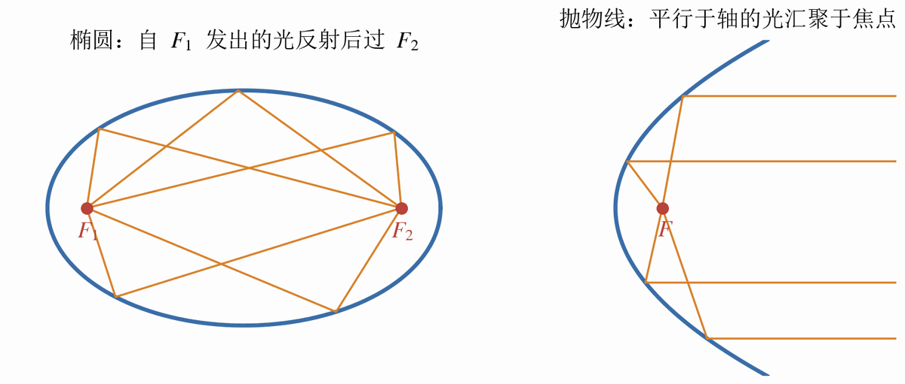
- 椭圆：从一个焦点发出的光线，经椭圆反射后经过另一个焦点。这是因为椭圆在点 处的法线平分 。
- 抛物线：从焦点发出的光线，经抛物线反射后平行于对称轴射出；反过来，平行于轴的光线反射后汇聚于焦点。探照灯、卫星天线和太阳灶都利用这一性质。
- 双曲线：射向一个焦点的光线，经双曲线反射后，看起来像是从另一个焦点发出的。
以椭圆为例说明理由：若切线上有另一点 ，则 在椭圆外，。所以切点 是切线上到两焦点距离之和最小的点，按光的反射定律，最短路径满足入射角等于反射角，即 、 与切线所成的角相等。
椭圆的面积与共轭双曲线。 椭圆 可以由半径为 的圆沿 方向压缩为原来的 倍得到，面积也按同样的比例变化，所以椭圆面积为 。双曲线 与 称为共轭双曲线，它们有相同的渐近线 ，但实轴分别在 轴和 轴上。
第九章 坐标系、几何约束与二次曲面
9.1 坐标变化与几何对象
平移坐标原点只改变点的位置坐标，不改变两点之间的差向量。设新原点在旧坐标系中位于 ，同一个点的新坐标为 。距离只依赖差向量，所以保持不变。把旧坐标下的表达式改写成新坐标时，应把 代入，而不是凭直觉在各处随意改变符号。二次曲线的配方，正是在代数上完成这种原点平移。
旋转坐标轴由正交矩阵描述。若把新基向量按列组成矩阵 ，同一个几何向量在新旧两组坐标下满足 ；因为 ，所以 。内积满足 ，说明旋转保持长度与夹角不变。正交变换还包括反射，反射的行列式为负一；只有行列式为正一的变换（旋转）才保持空间的左右手定向。点积在两类变换下都保持不变，而叉积的方向还取决于变换后的坐标系是否仍为右手系。
平面上把坐标轴逆时针旋转角 ，新旧坐标的关系为
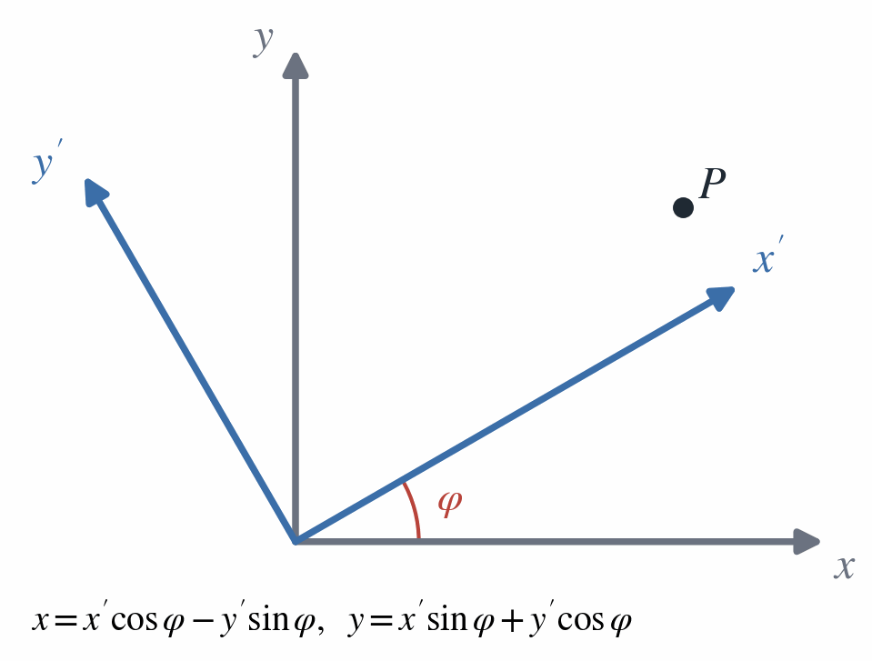
8.2 节消去交叉项时，就是把这组关系代入二次方程。
例23：旋转坐标轴消除斜方向。 原坐标中的直线 ，方向为 。取新横轴的单位向量 ，新纵轴为 （即 ），则
原直线上 ，所以 ，它成为新坐标系的横轴。点 的新坐标为 ，长度平方仍为一。坐标的变化并没有把点移动到别处，只是改变了描述它位置的两个基方向。把“旋转物体”和“旋转坐标轴”的公式混用，是符号方向出错的常见原因：两者的旋转方向恰好相反。
9.2 球面、切平面与球面截线
球面是到一个定点（球心）的距离等于半径的点的集合。球心为 、半径为 时，
若给出的是展开式 ，可以对三个变量分别配方，得到球心 和半径平方 。半径平方为正，才是普通的球面；为零时退化成一个点；为负时没有实点。不能只因为看到三个平方项的系数相等就断定是球面，最后这一条件不能省略。
球面上一点 处的切平面，法向量为半径方向 ，所以切平面方程为 。它来自“半径垂直于切平面”的几何事实，也可以由球面方程的梯度得到。球面外的点不能直接代入这个式子，声称得到了“该点处的切平面”，因为该点根本不在球面上。
例24：球与平面的交集。 球心在原点、半径为三的球面，与平面 相交。联立 与 ，得 ，所以交线是位于平面 内的圆，圆心 ，半径 。更一般地，设球心到平面的距离为 ：若 ，截线是半径为 的圆；若 ，平面与球面相切于一点；若 ，没有公共点。截圆半径公式直接来自“球心、截圆圆心、截圆上一点”构成的直角三角形，斜边是球半径。本例 ，，一致。
9.3 直线与球面的相交分类
把直线 代入球面方程 ，展开得到关于 的二次方程
判别式为正、为零、为负，分别对应两个交点、一个切点、没有交点。因为 ，二次项系数 严格为正，方程不会退化成一次方程。这个判据与距离判据完全一致：球心到直线的距离小于、等于、大于半径时，直线分别是割线、切线、与球面相离。
例25：切线条件中的参数。 对球面 ，直线为 。代入得 。当 时，交点为 ；当 时，只有一个公共点 ，直线与球面相切；当 时，没有实交点。这里的参数分类必须同时保留正负两个临界值 ，而不是只讨论 。从距离角度看，球心到这条直线的距离恰好是 ，分类立刻可见。
9.4 柱面与旋转曲面
若一个三元方程完全不含某个坐标，这个坐标就可以自由变化，方程通常表示一个沿该坐标轴方向延伸的柱面。例如 在三维空间中是圆柱面，而不是一个圆；只有再加上 ，才得到某个水平平面内的圆。同样， 在三维空间中是不受 限制的抛物柱面，而不是只位于纸面上的一条抛物线。
旋转曲面。 平面曲线绕一条坐标轴旋转一周得到旋转曲面。若 平面内的曲线 绕 轴旋转，曲面上一点到 轴的距离为 ，它扮演原来 的角色，所以旋转曲面的方程为 。例如直线 绕 轴旋转，得到圆锥面 。
常见二次曲面。 主要的二次曲面及其标准方程如下（）：
判断曲面的形状，应结合截面来理解，而不是只背名称。用平行于坐标面的平面去截，观察截线是什么曲线，这种方法称为截痕法。比如 ，固定任意 ，截线都是半径为 的圆，截面始终存在，所以曲面连成一体，是单叶双曲面。若改为 ，必须 才有截面，曲面分成上下两个互不相连的部分，便是双叶双曲面。锥面是两者之间的临界情形，在 处收缩为一个点。
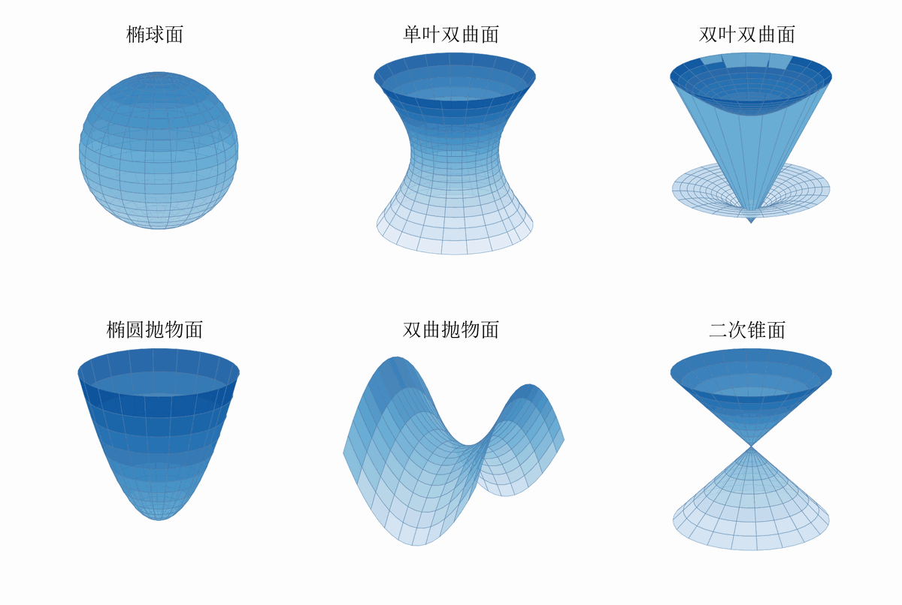
抛物面 的水平截面是圆，过 轴的竖直截面是抛物线，形状像一只碗；双曲抛物面 沿 方向向上弯、沿 方向向下弯，在原点附近呈马鞍形。这些截面也解释了微积分中二元函数的极值与鞍点：只沿某一条曲线看到函数上升或下降，不足以判断它在所有方向上的变化。
用截痕法判断二次曲面的步骤是：
- 先配方，把方程化为标准形式，确定中心或顶点。
- 数出平方项的个数和符号，对照上面的标准方程初步判断类型。
- 分别令 、、，观察截线是椭圆、双曲线、抛物线还是不存在。
- 由截线随 的变化，判断曲面是否连成一体、向哪个方向延伸。
9.5 二次曲面逐类分析
9.4 节给出了各类二次曲面的标准方程和截痕法的一般步骤。本节按俄语课程“二次曲面”（поверхности второго порядка）一节的顺序，对每一类曲面逐一考察三件事：取值范围，即曲面是否有界、哪些区域没有曲面上的点；对称性，即关于原点、坐标轴和坐标平面是否对称；截线，即用平行于坐标平面的平面去截所得的曲线。对称性可以直接从方程读出：若把 换成 方程不变，曲面关于 平面对称；若把 同时换成 方程不变，曲面关于 轴对称；三个变量都只以平方出现时，曲面关于三个坐标平面、三条坐标轴和原点都对称。
椭球面。 方程为 。三个平方项都非负，和为一，所以每一项都不超过一，、、，曲面有界。三个变量都只以平方出现，曲面同时具有中心对称、轴对称和平面对称。用平面 （）去截，移项得
是半轴随 增大而缩小的椭圆； 时缩成一点 ， 时没有交点。垂直于另外两条坐标轴的截线同样是椭圆。 时就是 9.2 节的球面。
椭圆抛物面。 课程采用的标准形式是
它与 9.4 节表中的 只差常数因子：把 分别换成 、 即可互化，曲面类型相同。写成 是为了与抛物线标准方程 的写法一致，这样 平面内的截线 的焦参数恰为 。左端非负，所以 ，曲面位于 平面上方，向上无界。、 只以平方出现， 以一次方出现，所以曲面关于 、 两个坐标平面对称，关于 轴对称，但不关于原点对称。截线如下：
- 平面 （）：，椭圆，半轴 、 随高度增大； 时只有原点， 时没有交点。
- 平面 ：，开口向上的抛物线，顶点随 增大而升高。
- 平面 ：，同样是开口向上的抛物线。
曲面形如一只碗，顶点在原点。 时水平截线是圆，曲面是抛物线绕 轴旋转而成的旋转抛物面。
双曲抛物面（马鞍面）。 标准形式为
左端可正可负， 可取任意实数，曲面向上、向下都无界。对称性与椭圆抛物面相同：关于 、 平面和 轴对称。截线如下：
- 平面 （）：，双曲线； 时实轴沿 方向， 时实轴沿 方向。
- 平面 ：，两条相交直线，它们是上述两组双曲线共同的渐近线。
- 平面 ：，开口向下的抛物线。
- 平面 ：，开口向上的抛物线。
由第 3、4 条可以看出曲面的另一种生成方式。平面 内的截线是开口向下的抛物线，形状与 无关，顶点 恰好落在 平面内开口向上的抛物线 上。所以，让一条开口向下的抛物线保持形状不变，顶点沿另一条开口向上、所在平面与它垂直的抛物线平移，扫过的曲面就是双曲抛物面。原点沿 方向是最低点，沿 方向是最高点，这样的点称为鞍点。
单叶双曲面。 方程为 。用平面 去截，得椭圆
对任何 都存在，所以曲面连成一片。 时椭圆最小，半轴为 、，这个椭圆称为喉椭圆（горловой эллипс）； 越大，椭圆越大，曲面形如冷却塔。平面 截得 ： 时为双曲线， 时右端为零，退化为一对相交直线。平面 的情形相同。三个变量都只以平方出现，曲面关于原点、三条坐标轴和三个坐标平面都对称。
双叶双曲面。 课程写成
两边乘以负一，就是 9.4 节表中右端为 的形式。由 得 ，两平面 之间没有曲面上的点，曲面分为上下互不相连的两叶。平面 的截线： 时为椭圆， 时为一点，即顶点 ， 时没有交点。平面 截得 ，右端恒为正，所以总是双曲线，不会退化；平面 同理。对称性与单叶双曲面相同。
二次锥面。 方程为 。方程是齐次的：若点 在曲面上，则对任意实数 ，点 也在曲面上，因为各项同乘以 。所以曲面由过原点的直线组成，原点称为顶点，这些直线称为母线。 时是旋转锥面，即正圆锥面。
一般地，给定一点 （顶点）和一条不过 的曲线 （准线），过 与 上各点的直线 （母线）组成的曲面称为锥面。二次锥面的方程可以由这一定义推出。取顶点为原点，准线为平面 （）内的椭圆 。设 （）是锥面上一点，过 的母线与准线交于 。、、 共线，，比较第三个坐标得 ，所以
代入准线方程，，两边乘以 ，得 ，正是二次锥面的标准方程。推导中除去了 的点，而方程在 时只有原点，即顶点，所以方程恰好描述整个锥面。准线换成其他曲线时，用同样的“共线比例代入”方法可以求出相应锥面的方程。平面 （）截得椭圆， 时只有顶点；平面 （）截得双曲线， 时截得一对过顶点的直线 。8.5 节说明过，平面截圆锥所得曲线的类型由截平面与母线的关系决定，对二次锥面同样成立：
- 截平面与所有母线都相交，只截到一叶：椭圆（包括圆）。
- 截平面平行于一条母线：抛物线。
- 截平面平行于两条母线，截到上下两叶：双曲线。
- 截平面过顶点：一对相交直线，或一条直线（截平面与锥面相切），或只有顶点一点。
把单叶和双叶双曲面方程右端的 换成零，就得到这个锥面，所以锥面是两类双曲面的分界。它称为两者的渐近锥面：离原点越远，双曲面越贴近锥面。
柱面。 方程中缺少某一个变量时，这个变量可以任意取值，曲面就是柱面：母线平行于所缺变量对应的坐标轴，准线是另外两个变量所在坐标平面内由同一方程表示的曲线。三种二次柱面都缺 ，母线平行于 轴：
画柱面时，先在 平面内画出准线，再沿 方向无限平移。椭圆柱面在 时就是 9.4 节的圆柱面。
柱面所缺的变量不一定是 ，判断规则不变：缺哪个变量，母线就平行于哪条坐标轴。例如俄语课程大纲中写作 的双曲柱面缺 ，母线平行于 轴，准线是 平面内的双曲线； 的抛物柱面缺 ，母线平行于 轴，准线是 平面内的抛物线。
分类小结。 不计退化情形（一点、一条直线、一对平面、空集等），实二次曲面共有九类：椭球面、单叶双曲面、双叶双曲面、二次锥面、椭圆抛物面、双曲抛物面、椭圆柱面、双曲柱面、抛物柱面。由标准方程判断类型，可以按下面的顺序：
- 先看是否缺少变量：缺一个变量就是柱面，再按准线是椭圆、双曲线还是抛物线命名。
- 三个变量都出现时，看是否有变量只以一次方出现：右端为 的是抛物面，两个平方项同号为椭圆抛物面，异号为双曲抛物面。
- 三个变量都以平方出现、右端为一：没有负号是椭球面，一个负号是单叶双曲面，两个负号是双叶双曲面。
- 三个变量都以平方出现、右端为零且符号不全相同：二次锥面。
直纹面（课程延伸）。 由一条直线运动生成的曲面称为直纹面。柱面和锥面显然是直纹面；不太直观的是，单叶双曲面和双曲抛物面也是直纹面，而且各含两族直线。以双曲抛物面为例，把方程左端分解因式：
对每个实数 ，两个平面
的交线是一条直线。两式相乘就回到原方程，所以这条直线上的每一点都在曲面上；让 取遍全体实数，就得到一族直线。 时交线是平面 内的直线 。交换两个因子的角色，令 、，得到另一族直线。单叶双曲面可以同样处理，把方程移项分解为
对 ，令 与 ，两式相乘再约去 即回到原方程。冷却塔可以用笔直的钢梁搭成双曲面的形状，原因就在这里。
讲解例：由一般方程判断二次曲面。 判断曲面 的类型，并求其鞍点或顶点。
对 、 分别配方：，。代入原方程，
作平移 、、，得
、 以平方出现且异号， 只以一次方出现，所以是双曲抛物面，，，鞍点（新坐标原点）在 。验算：把 代入原方程，，成立。再看截线：平面 内为 ，开口向上；平面 内为 ，开口向下；平面 截得两条直线 。这三条截线正是马鞍面在鞍点处的特征。
第十章 几何解法的完整性与核验
10.1 方向、位置与参数范围应同时保留
直线的方向向量乘以非零常数，仍表示同一个方向；但如果参数有指定的范围，数乘之后还要同步改变范围。例如线段 、，若只把方向改为原来的两倍而保留同一个参数区间，就把线段延长了一倍。对于无限长的直线，参数可以取全体实数，这个问题被隐藏了；但对于线段、射线和曲线上的一段弧，参数范围直接决定点集。
例26：线段上的最短距离。 点 ，线段端点为 、。先按无限直线投影，参数 。它不在零到一的范围内，对应的垂足 不在线段上。线段上的点到 的距离随 的变化先减后增，最小值在 处，而在 上它单调减小，所以最近点是端点 ，距离为 ，而不是点到整条横轴的距离一。无限直线的距离公式本身是正确的，错误出在把几何对象的范围扩大了。
10.2 交点计算与几何存在性
联立方程得到的候选点，应当代回所有原始约束进行检验，特别是在做过平方、去分母或参数替换之后。平方可能引入不满足原来符号条件的解；除以一个表达式，可能丢掉该表达式为零时的解。这些问题不是算术上的粗心，而是变形前后的等价关系发生了改变。每做一步变形，都应辨认它是双向等价，还是只有单向的推出关系。
求两个平面的交线时，任意令一个坐标为零有时会恰好失败。例如平面 与 的交线是 ，若尝试令 ，立刻得到矛盾 ，但这只说明所选的辅助平面 与交线平行、没有截到它。正确做法是让真正可以自由变化的坐标（这里是 ）作为参数，而不是把辅助选择的失败误判为原方程无解。
10.3 几何自由度不能只靠未知数个数猜测
三个坐标并不意味着三个独立的自由方向，因为约束之间可能相关，也可能互相矛盾。平面方程 、、 看起来有三个，实际上只有一个独立的约束，解集仍是一个平面；若把最后一个方程的右端改为四，方程组就无解。这里应当用秩来判断，而不是按“有三个方程，所以得到一个点”来计数。
对于非线性约束，交集的维数还可能随位置改变。球面与平面通常相交成一个圆，但相切时交集退化成一个点，相离时为空集。仅凭“两个方程约束三个坐标”就断言交集必是一条曲线，会漏掉退化和不相容的情形。线性代数的维数公式有精确的前提条件，几何直观必须与代数条件相互核对。
几何解题的核验要点可以归纳为：
- 结果代回原方程：交点、垂足、切点都要满足所有原始条件。
- 检查垂直和平行关系：用点积为零、叉积为零或系数成比例核对。
- 用另一种方法重算：例如距离既用公式又用垂足，夹角既用法向量又用方向向量。
- 检查退化情形：零向量、共线点、平行导致的分母为零、二次曲线的退化。
- 检查参数范围：线段、射线和弧段的端点是否需要单独比较。
- 检查符号与单位：有向投影、有向面积与距离、面积的区别。
来源及后续联系
本册的课程主线来自《判断叉乘方向》《解析几何直线方程》《空间解析几何总结》及相关向量解释的可读文字。历史图片中的箭头朝向、板书常数和图形标记，仅凭附件占位无法重新核实；本册中每个完整列出的例题，都按所写条件独立计算。first CC 已提取的教材清单中没有单独的解析几何教材，因此本册没有声称按照某本未读过的教材逐页改写。二次曲线、二次曲面章节以及截距式、法线式、直线束与平面束、焦半径、类型判别等公式，是为补足知识体系而写的延伸内容，在此说明其性质。
向量的俄语常见写法为 вектор，法向量为 нормальный вектор，方向向量为 направляющий вектор，平面为 плоскость，直线为 прямая。以后在其他学科中遇到相关问题时，可以回到本册对应的工具：物理中的功，回到点积与投影；力矩，回到叉积的方向；势能的梯度，回到等值面的法向量；多个线性约束，回到方程组的秩与几何自由度。这些联系都建立在同一套坐标和正交分解之上。
2026-10-31增补依据 claude.ai 网页对话《直线方程的写法》：6.1节俄式典范方程分母为零的约定与“空间直线为何需要两个方程”，6.2节一般方程化典范方程例，7.1节分数交点与线面角例、过一点平行于两直线的平面例，7.2节直接联立求交点例。各例数值逐式核算并代回检验。
2026-11-12增补的9.5节依据 claude.ai 网页对话《二次曲面图形》：用户拍摄的俄语课件第5.7节“二次曲面”（定义5.13—5.16的椭圆抛物面、双曲抛物面、单叶与双叶双曲面，以及二次锥面与三种柱面两页，第一页顶部为椭球面的结尾）。课件照片与回答中的交互线框图未取回，各类曲面的截线方程按标准方程逐一重新推导。直纹面两族直线的分解、圆锥截线中过顶点的退化情形、渐近锥面以及由一般方程配方判型的讲解例为课程延伸。
下一册 · 微积分与微分方程